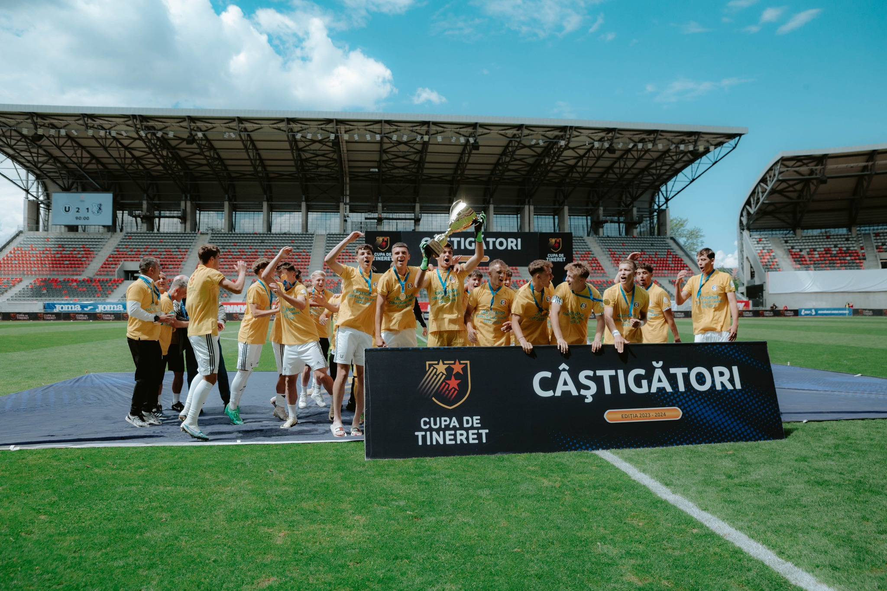

Academia FC Universitatea Cluj

“Șepcile roșii” au format, din 1919 până astăzi, nu doar SPORTIVI, ci și OAMENI. Cu un puternic centru de copii și juniori în spate, apreciat la nivel național, FC Universitatea Cluj duce mai departe această tradiție, iar creșterea și promovarea jucătorilor produși în propria academie este o parte importantă din strategia clubului care i-a dat "fotbalului mare", printre alții, pe:
- Olimpiu Morutan
- Razvan Cociș
- George Florescu
- Dorin Goga
- Gabriel Giurgiu